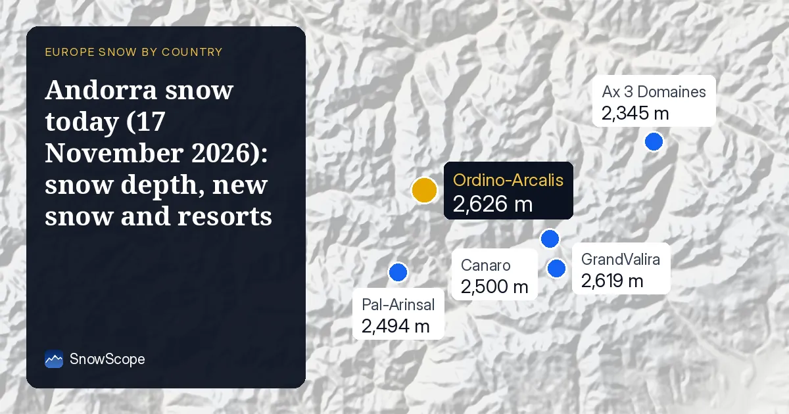

Two-week snow outlook in Andorra: 13 cm and 21 cm
The first week could bring up to 13 cm to the snowiest slopes in Andorra, the second up to 21 cm.
See the live snow forecast for Ordino-Arcalis in the SnowScope appSnow depth, powder alerts and the 3D map, free.
Two weeks ahead
Two weeks out, the trend counts more than the totals: it tells you whether to book now or wait for the next storm.
In Andorra, about 10 km² of high ground is white today, little changed from yesterday. Roughly 2 % of the country's mapped mountains and hills are covered.
| Resort | Snow depth | New snow, 72 h | Coming, next days | Top |
|---|---|---|---|---|
| Ordino-Arcalis | 3 cm | 2 cm | 8 cm | 2,626 m |
| Pal-Arinsal | 3 cm | 1 cm | 4 cm | 2,494 m |

Snow on the way?
Over the next three days up to 6 cm is expected, and up to 7 cm over the week.
Thursday 19 November stands out, with up to 5 cm in a day.
Further out, days 8 to 14 show up to 21 cm on the snowiest slopes.
Shortlist for the weekend
Ordino-Arcalis leads with 3 cm on its upper slopes.
Next on the list: Pal-Arinsal (3 cm).
At Ordino-Arcalis: 2 cm of fresh snow over three days, 8 cm more expected by Friday 20 November.
At Pal-Arinsal: 1 cm of fresh snow over three days, 4 cm more expected by Friday 20 November.
2 of the 4 resorts we follow in Andorra have snow on their upper slopes.
How deep it is, height by height
Average depth of the snowpack by height band: 2,000-2,500 m: on average under 1 cm (1 % of the ground white); above 2,500 m: on average under 1 cm (9 % white).
How much of the country is white
That is close to the 40 km² of a week ago. No height band is mostly white yet.
Fresh snow
Hardly any new snow fell in the last three days: the three-day maximum is 1 cm.
How this start compares
Resort by resort, today against a normal 17 November: Ordino-Arcalis: 0 cm at about 2,284 m, against 4 cm in a normal year; Pal-Arinsal: 0 cm at about 2,024 m, against 3 cm in a normal year.
0 of these 2 resorts are above their usual depth for the date.
These depths are for one height on each mountain, below the top, so they read lower than the upper-slope numbers further down.
In past winters the best snow at Ordino-Arcalis usually came mid-February / early March.
The neighbours today
For comparison, the neighbours on the same day: Spain: 0 % white, deepest Tavascan with 6 cm, up to 5 cm in the week ahead; France: 10 % white, deepest La Grave with 110 cm, up to 122 cm in the week ahead.
On the ground
Little has changed on the ground, so the snow you find today is mostly the snow of the last storm.
Tips for skiers
- Morning snow is firm after a clear night: wait for the sun on south faces.
- Check the resort's own lift status before you travel.
- Early-season snow is thin over rocks: ski the groomed runs first.
About these numbers
Resort snow depths are the deepest snow on the resort's upper slopes on the date shown; they are estimates for an area, not a measurement at one point. Forecasts can change. Always read the official avalanche bulletin before going off-piste.
Cite this report
For research, teaching or the press: the numbers and charts are free to reuse under CC BY 4.0 with this citation.
SnowScope (2026), Two-week snow outlook in Andorra: 13 cm and 21 cm, https://snowscope.app/blog/en/2026/11/andorra-snow-report-17-november-2026.html, accessed 2026-11-17
SnowScope (Atlas Labs). (2026, November 17). Two-week snow outlook in Andorra: 13 cm and 21 cm. SnowScope snow reports. https://snowscope.app/blog/en/2026/11/andorra-snow-report-17-november-2026.html
BibTeX
@misc{snowscope2026andorrasnowreport17novem,
author = {{SnowScope (Atlas Labs)}},
title = {Two-week snow outlook in Andorra: 13 cm and 21 cm},
year = {2026},
month = nov,
howpublished = {\url{https://snowscope.app/blog/en/2026/11/andorra-snow-report-17-november-2026.html}},
note = {Published 2026-11-17 12:46 UTC; accessed 2026-11-17}
}· CC BY 4.0 · Methods, data and tools →
Ordino-Arcalis: snow and temperature by height, this winter vs last (tools) →
Follow Ordino-Arcalis
Free: a message when fresh snow is coming, and the forecast every morning.
More snow reports

SnowScope's peak finder is a free peak finder app: point your phone at the mountains and it names the summits, with height, distance and climb time. Our tests: 98 % of the summits it lists are really in sight, and on real photos it corrected compass errors of up to 105° to 0.15°. Free with 3 names, every peak for $0.99 once.

Snow is falling on Slovenia's ski mountains today: about 37 cm on Kanin and 21 cm on Krvavec. Where the snow lies, how it compares with past winters, and the next snowy day.

Tornik on Zlatibor had up to 39 cm on its upper slopes on 15 November 2026; by Wednesday it had melted. Kopaonik barely turned white. The week day by day and what comes next.